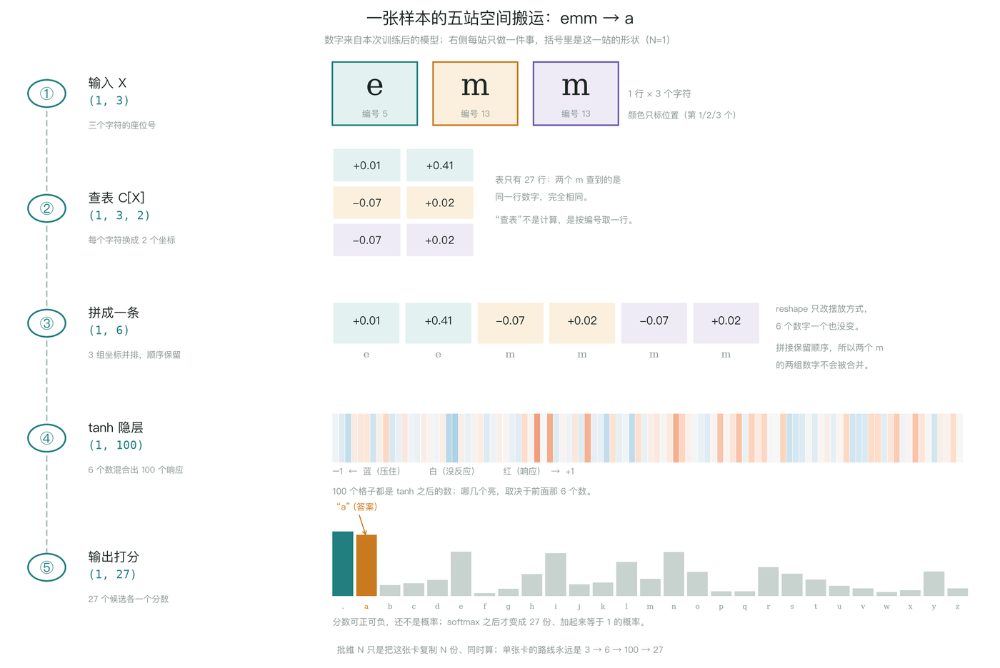
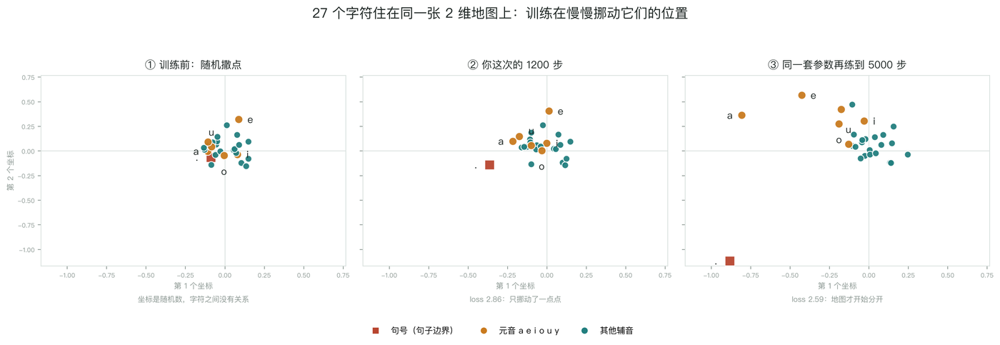
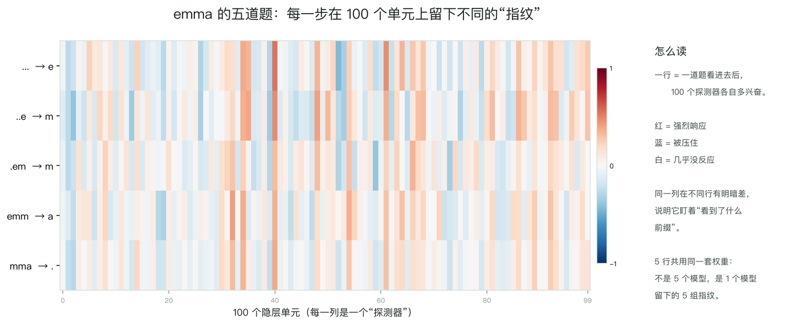
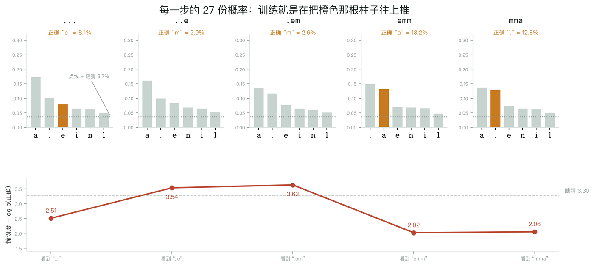
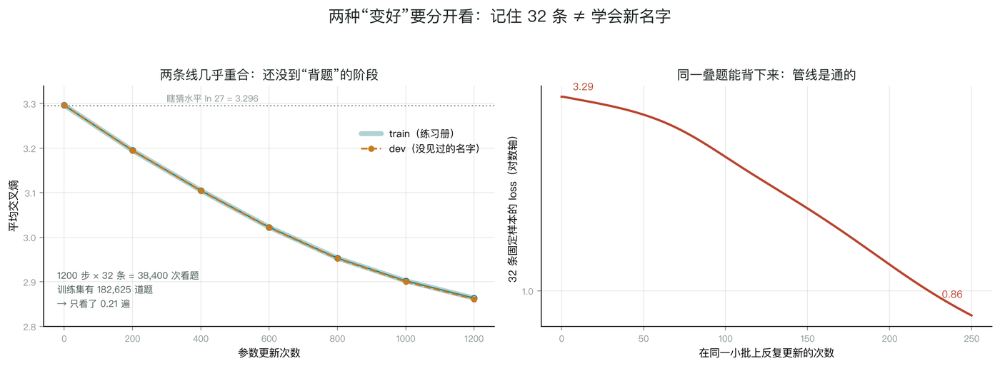
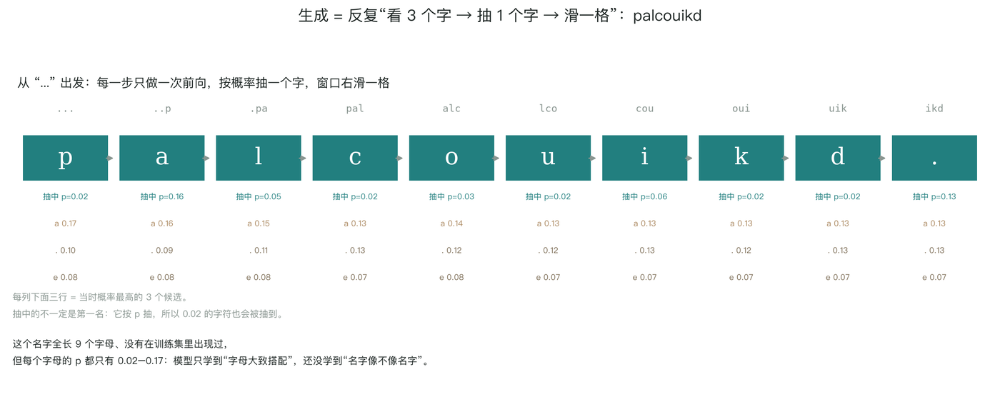

这一段是什么：2026-11-11 围绕步骤 4 的一轮问答整理，按问题归类。图都是当场为了解释而画的示意图，不是课程截图；图里的数字来自本次实跑（seed 42、block 3、D=2、H=100、1200 步），loss 与 notebook 打印的 2.863 / 2.861 / 2.865 一致。
一句话：给最近 3 个字符，给 27 个候选各打一个分数；训练就是调这 3,481 个数字，让正确答案的分数变高。代码里的 forward 就是这条流水线，一共五站。
| 站 | 形状 | 在干什么 | 一句话 |
|---|---|---|---|
| ① 输入 | (N,3) | 3 个字符换成 3 个编号 | 编号只是座位号，e=5、m=13 没有大小含义 |
| ② 查表 | (N,3,2) | 每个编号去 C 表取一行 | 表是 27×2、可训练；两个 m 取到完全一样的数字 |
| ③ 拼接 | (N,6) | 3 组坐标横着排成一条 | 顺序是信息，所以并排而不是相加 |
| ④ 隐层 | (N,100) | 6 个数变 100 个数，过 tanh | 100 个“加权提问”，每个单元一种问法 |
| ⑤ 输出 | (N,27) | 100 个数变 27 个分数 | 还不是概率，softmax 之后才是 |

emm → a。每站只做一件事，括号里是这一站的形状（N=1）。三个最容易误读的地方：
N 不是模型的一部分。(4,3) 与 (182625,3) 只是同时算几张卡；改 batch size 不改参数量。参数量 3,481 = 54（C 表）+ 600（W1）+ 100（b1）+ 2,700（W2）+ 27（b2）。训练唯一改变的，就是这些数字。



..e → m 与 .em → m 的惊讶度 3.54、3.63 比瞎猜的 3.30 还差——平均 loss 降了，不代表每一步都变好。
